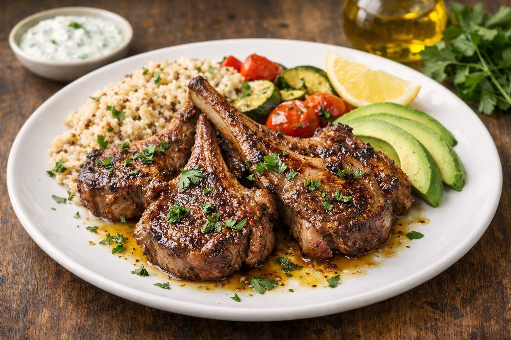

Whole Foods Recipes: Mediterranean Cast Iron Lamb Chops
Last updated: March 10, 2026

A simple cast iron method that produces flavorful lamb chops using olive oil, butter basting, garlic, and parsley.
- Cast iron matters: a hot cast iron pan creates a deep, flavorful sear.
- Butter basting adds depth: melted butter, garlic, and pan juices build flavor quickly.
- Simple ingredients work best: olive oil, salt, garlic, and parsley are enough.
- Pairs naturally with grains: lamb chops work well with quinoa bowls, vegetables, or potatoes.
Purpose
This recipe shows how a simple cast iron technique can turn lamb chops into a rich, satisfying meal using only a few whole ingredients. The goal is not complexity — it is a repeatable home method that produces restaurant-level flavor using proper heat, salt, and butter basting.
Total time
- Prep time: 5–10 minutes
- Cook time: 6–8 minutes
- Rest time: 5 minutes
- Total: about 15–20 minutes
Ingredients
- 1–2 lbs bone-in lamb chops
- 1 tbsp olive oil
- Salt and pepper
- 2 tbsp butter
- 1 clove garlic
- Fresh parsley
Method
- Bring lamb to room temperature.
- Heat cast iron pan over medium-high heat.
- Add olive oil and sear lamb chops 3–4 minutes per side.
- Add butter and garlic.
- Tilt pan and baste lamb repeatedly with melted butter.
- Cook until desired doneness and rest 5 minutes.
- Finish with chopped parsley.
Finish
After resting, finish the lamb chops with freshly chopped parsley and a small drizzle of olive oil. The herbs brighten the richness of the butter and the olive oil helps carry the flavors across the meat.
Serve With
- Quinoa Bowl Base
- Roasted vegetables
- Mashed potatoes
- Avocado and olive oil
Notes
- Bone-in chops: tend to have more flavor and cook very well in cast iron.
- Heat control: the pan should be hot enough to sear but not burn the butter.
- Butter timing: add butter after the first flip so it enhances flavor rather than burning early.
- Resting matters: letting the meat rest allows juices to redistribute.
Personal note
This recipe highlighted how much flavor can come from a simple technique. The butter baste made the biggest difference and turned a basic cast iron cook into something much more satisfying. When paired with quinoa, vegetables, or avocado, it becomes an easy and balanced meal built entirely from whole ingredients.
Next steps
Continue with more Whole Food Cooking.
This article focuses on general food quality and cooking with quality ingredients, not medical advice.